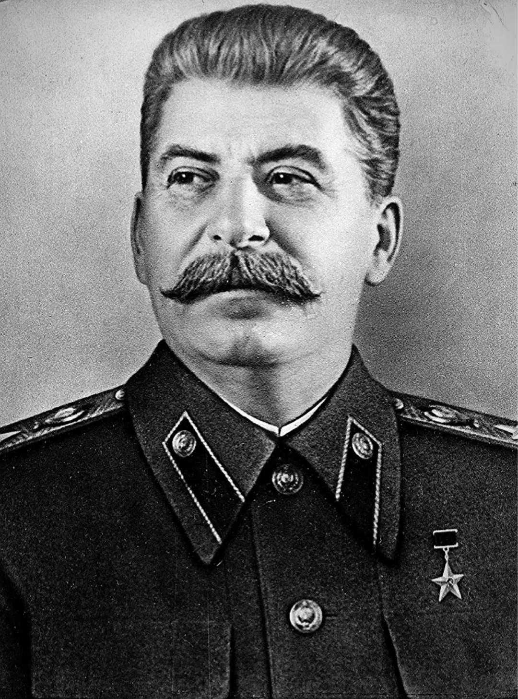

Joseph Stalin
A famous left-authoritarian politician is Joseph Stalin, the leader of the Soviet Union from the mid-1920s until his death in 1953. Stalin combined Marxist-Leninist ideology with an authoritarian governance style, consolidating power through centralized control of the economy, extensive propaganda, and political purges. His policies, including the Five-Year Plans and collectivization of agriculture, aimed to rapidly industrialize the Soviet Union but also led to widespread repression and famine.